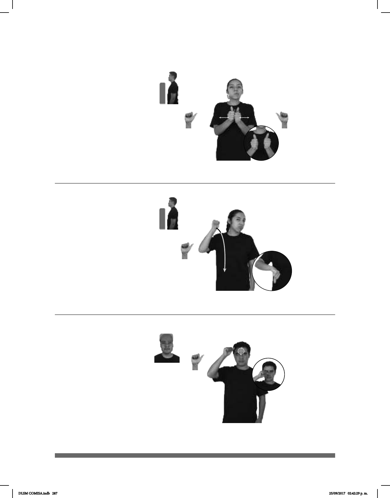

287
Seña: SS
A.1
Las palmas se encuentran
frente a frente.
A la altura del pecho.
Las manos se encuentran
y se tocan repetidamente.
Mejilla derecha
1. sust. f. Cópula sexual.
2. sust. m Unión de las hembras de los
animales con los machos para su
reproducción.
1
2
(A-163)
____muy
RÁPIDO CONEJO REPRODUCIR++
Los conejos se reproducen muy rápido.
Sacerdote – Padre (A-165)
Seña: SM
A.1
Palma oblicua hacia la
izquierda y hacia abajo.
A la altura de la frente.
La mano se mueve
formando círculos.
sust. m. Hombre dedicado
y consagrado a la celebración de ritos y
ceremonias religiosas; entre los
católicos, el que ha recibido las órdenes
HOY NUEVO SACERDOTE pro-YO YA CONOCER pro-ÉL
Hoy conocí al nuevo sacerdote.
Seña: SM
A.1
Palma hacia la
izquierda.
Del hombro al pecho.
Recto.
v. tr. No aprobar un
examen escolar por no demostrar
que se tienen los conocimientos
mínimos necesarios para ello.
Reprobar (A-164)
SEXTO
Primaria
pos-MI HIJO YA REPROBAR
Mi hijo reprobó el sexto de primaria.
DLSM COMISA.indb 287 25/09/2017 02:42:29 p. m.